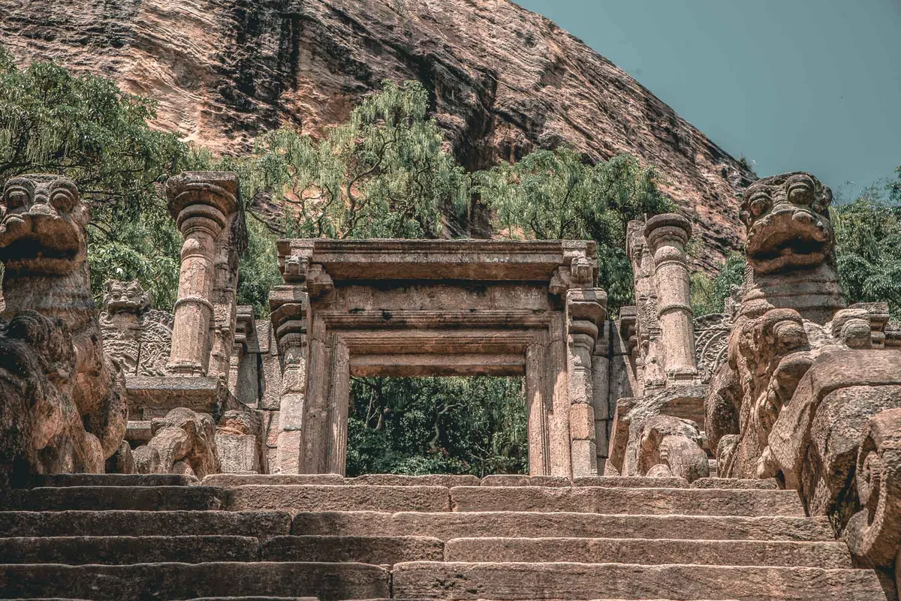

Strong, dry breezes ruffle the quiet serenity of the temperate country side. Wild grass thrust through pleasantly undulating ground while a lone lizard revels in brilliant sunshine, poised on one of many ancient stone ruins. Overhead looms the Yapahuwa rock, 300-foot isolated fortified wonder with a history dating back to the 13th Century.Yapahuwa is in the Pahala-visi-deka Korale, Wanni Hatpattu, of the Northwestern Province. Situated on the outskirts of Kurunegala, it is just three miles from the Maho railway station.
